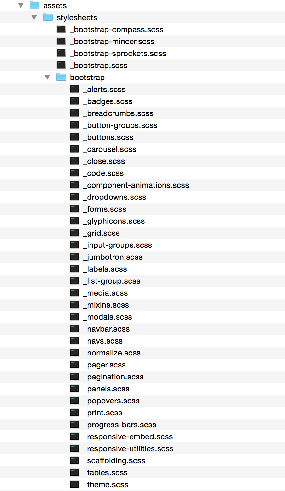
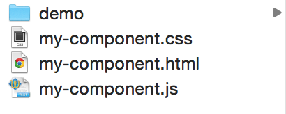
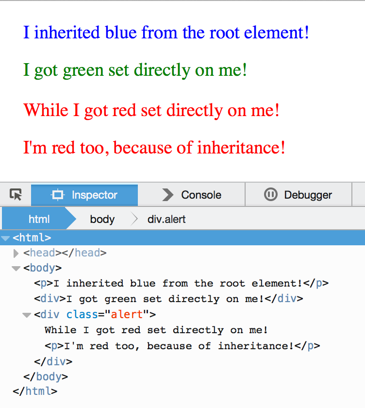

:root {
--main-color: green;
--accent-color: gold;
}
h1 {
color: var(--main-color);
}
Bootstrap file structure 
Web component file structure 
http://caniuse.com/#search=css%20vari
https://groups.google.com/a/chromium.org/forum/#!topic/blink-dev/vZ0am_AdxxE
:root {
--main-color: green;
--default-margin: 20px;
}
h1 {
color: var(--main-color);
background-color: var(--main-bg-color, gold);
}
--main-color: green;
--default-margin: 20;
--side: margin-top;
h1 {
color: var(--Main-color);
margin: var(--default-margin, 10)px;
var(--side): 20px;
}
Standard cascade rules apply

:root { --color: blue; }
div { --color: green; }
.alert { --color: red; }
* {
color: var(--color);
}
Variables can inherit from each other:
:root {
--default-margin: 20px;
--double-margin: calc(var(--default-margin) * 2);
}
When dependencies cannot be resolved, they compute to their initial value, which is guaranteed to be an invalid value.
:root {
--one: calc(var(--two) + 20px);
--two: calc(var(--one) - 20px);
}
p {
margin-bottom: 50px;
}
p.one {
margin-bottom: var(--one);
/* results in margin-bottom: 0; */
}
:root {
--default-font: bold 12pt/14pt Helvetica;
--default-font-size: 16px;
}
p {
font: var(--default-font);
}
span {
font: normal var(--default-font-size) serif;
}